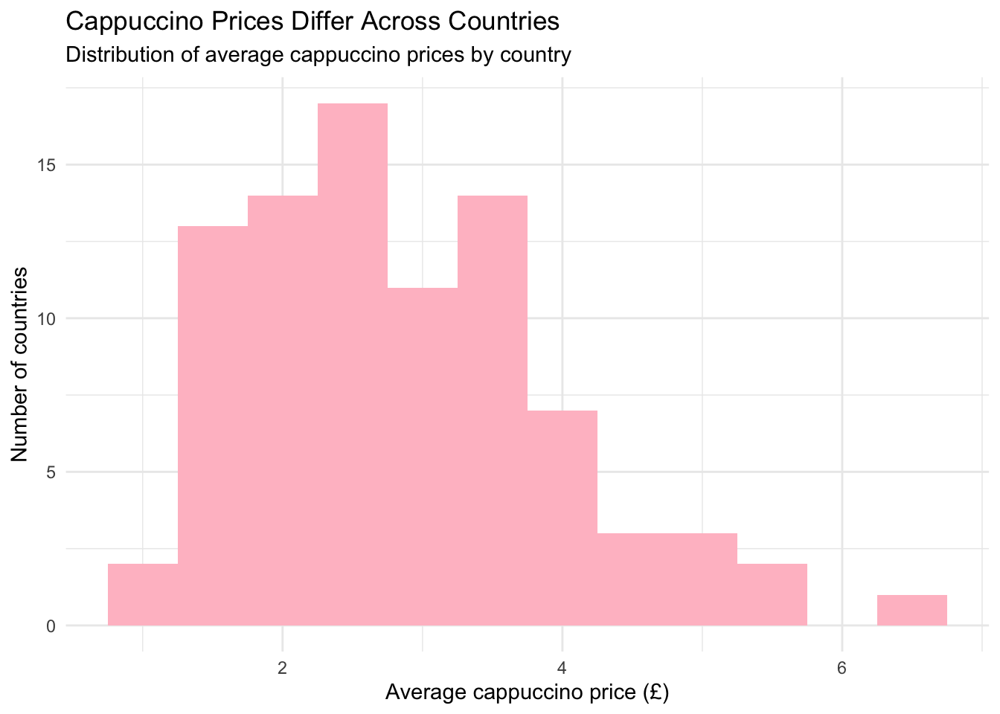
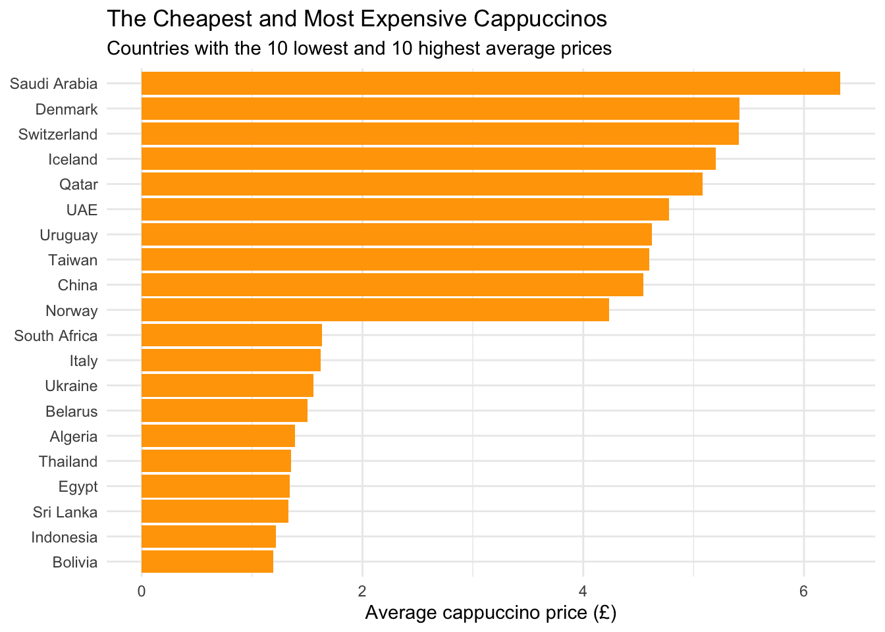
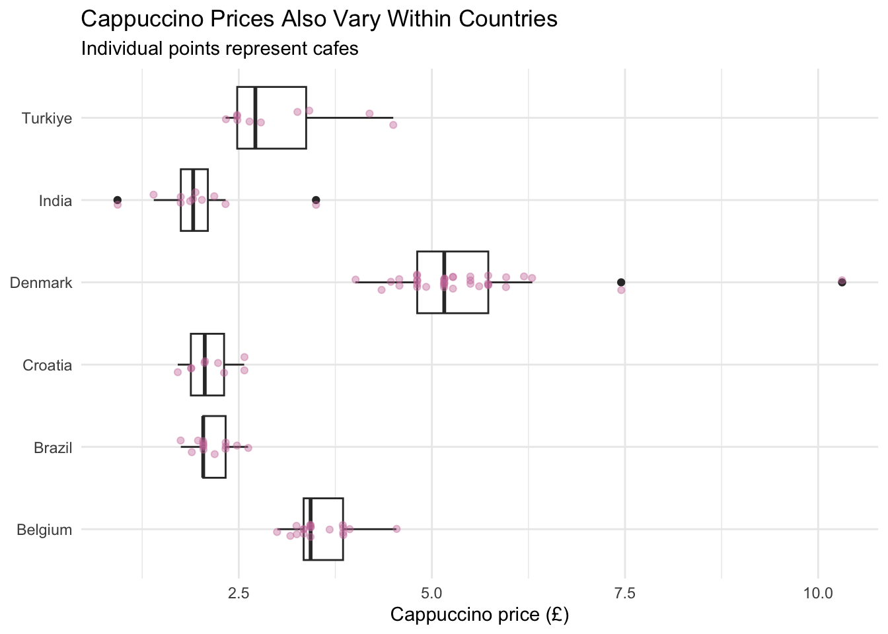

Homework 01
TidyTuesday Part
Explore the week’s TidyTuesday challenge. Develop a research question, then answer it through a short data story mainly composed of effective visualizations. Provide sufficient background for readers to grasp your narrative. Refer to the Homework Instructions ⭐ page on the course website for details on how to submit this part.
Cappuccino prices differ from cafe to cafe, but prices may also differ across countries. The TidyTuesday dataset contains information about individual cafes, including the price of a small cappuccino in both the original currency and British pounds. My research question is simple; “do cappuccino prices vary substantially between countries?”
Methodology
Lets load the data;
We need to clean the data because the dataset has an invisible character in the country names for New Zealand and South Africa. The TidyTuesday documentation specifically warns about this because it can cause joins to fail.
Looking at our dataset…
Rows: 2,594
Columns: 10
$ country <chr> "Denmark", "China", "USA", "Switzerland", "Denmark",…
$ city <chr> "Copenhagen", "Shenzhen", "West Richland", "St. Mori…
$ urban <lgl> TRUE, TRUE, FALSE, FALSE, TRUE, TRUE, TRUE, FALSE, T…
$ suburban <lgl> FALSE, FALSE, TRUE, FALSE, FALSE, FALSE, FALSE, TRUE…
$ rural <lgl> FALSE, FALSE, FALSE, TRUE, FALSE, FALSE, FALSE, FALS…
$ hourly_wage_gbp <dbl> 16.04, 3.29, 13.25, 24.50, 16.04, 11.19, 12.85, 21.1…
$ price_gbp <dbl> 10.31, 9.44, 8.89, 8.26, 7.45, 6.89, 6.85, 6.24, 6.3…
$ original_currency <chr> "DKK - Danish Krone", "CNY - Yuan Renminbi", "USD - …
$ price <dbl> 90.00, 86.00, 12.00, 9.00, 65.00, 11.90, 8.00, 6.80,…
$ hourly_wage <dbl> 140.00, 30.00, 17.88, 26.70, 140.00, 19.31, 15.00, 2…Lets look at how many cafes do we have from each country?
# A tibble: 87 × 2
country n
<chr> <int>
1 Algeria 1
2 Argentina 22
3 Armenia 1
4 Australia 171
5 Austria 13
6 Barbados 1
7 Belarus 2
8 Belgium 19
9 Bolivia 2
10 Brazil 14
# ℹ 77 more rowsWhat does the cappuccino price variable look like?
Visualizations
- Calculate the average price for each country
Code
# A tibble: 87 × 2
country mean_price
<chr> <dbl>
1 Algeria 1.39
2 Argentina 2.40
3 Armenia 2.65
4 Australia 2.75
5 Austria 3.56
6 Barbados 3.88
7 Belarus 1.5
8 Belgium 3.55
9 Bolivia 1.19
10 Brazil 2.15
# ℹ 77 more rowsGraph 1- The overall picture
What does the overall distribution of country-level cappuccino prices look like?
Code
ggplot(country_prices,
aes(x = mean_price)) +
geom_histogram(binwidth = 0.5, fill= "pink") +
labs(
title = "Cappuccino Prices Differ Across Countries",
subtitle = "Distribution of average cappuccino prices by country",
x = "Average cappuccino price (£)",
y = "Number of countries"
) +
theme_minimal()
The above graph indicates that the cappuccino prices vary, with a range of ~0.5£ to ~5.75£ with one country having average cappuccino price above 6 pounds. It is fairly distributed, most countries having average price of around 2-3£. Although this graph gives us an overview, we will still need to investigate further.
Graph II: Show the extremes
Code
cheapest <- country_prices |>
slice_min(mean_price, n = 10)
most_expensive <- country_prices |>
slice_max(mean_price, n = 10)
price_extremes <- bind_rows(
cheapest,
most_expensive
)
# Note to self: bind_rows will put these datasets on top of eachother, reorder will not put the countries in alphabetical order!! geom_col() is better when you know the values calculated in which I did above.
ggplot(
price_extremes,
aes(x = mean_price, y = reorder(country, mean_price)
)
) +
geom_col(fill= "orange") +
labs(
title = "The Cheapest and Most Expensive Cappuccinos",
subtitle = "Countries with the 10 lowest and 10 highest average prices",
x = "Average cappuccino price (£)",
y = NULL
) +
theme_minimal()
The countries at the extremes show that the difference in average cappuccino prices can be substantial. The lowest-priced countries have average prices around £1–£2, while the highest-priced countries have averages above £4, with some exceeding £5.
Graph III: Is the variation only between countries, or do prices also vary substantially within countries?
# A tibble: 87 × 2
country n
<chr> <int>
1 USA 600
2 UK 595
3 Australia 171
4 Germany 167
5 Canada 130
6 Poland 100
7 Netherlands 73
8 Czechia 67
9 Ireland 45
10 Denmark 36
# ℹ 77 more rowsCode
#out of these cafes I will choose 6 that have reasonable number of cafes
countries_selected <- c(
"Denmark",
"Belgium",
"Brazil",
"Turkiye",
"India",
"Croatia"
)
#lets filter to keep the observations that satisfy the condition
cafe_selected <- cafe |>
filter(country %in% countries_selected)
#Graph time!
ggplot(
cafe_selected,
aes(
x = price_gbp,
y = country
)
) +
geom_boxplot() +
geom_jitter(height = 0.1, alpha = 0.4, color= "#CC79A7") +
labs(
title = "Cappuccino Prices Also Vary Within Countries",
subtitle = "Individual points represent cafes",
x = "Cappuccino price (£)",
y = NULL
) +
theme_minimal()
Although the country averages reveal differences between countries, individual cafe prices show that prices can also vary within a country. For example, the sampled cafes in Denmark show a considerably wider range of prices than those in Croatia and Brazil. Denmark also contains several higher-priced observations that extend well beyond the main cluster of cafes.
This demonstrates why looking only at a country’s average can be misleading: an average summarizes the data, but it does not show the full range of prices found among individual cafes.